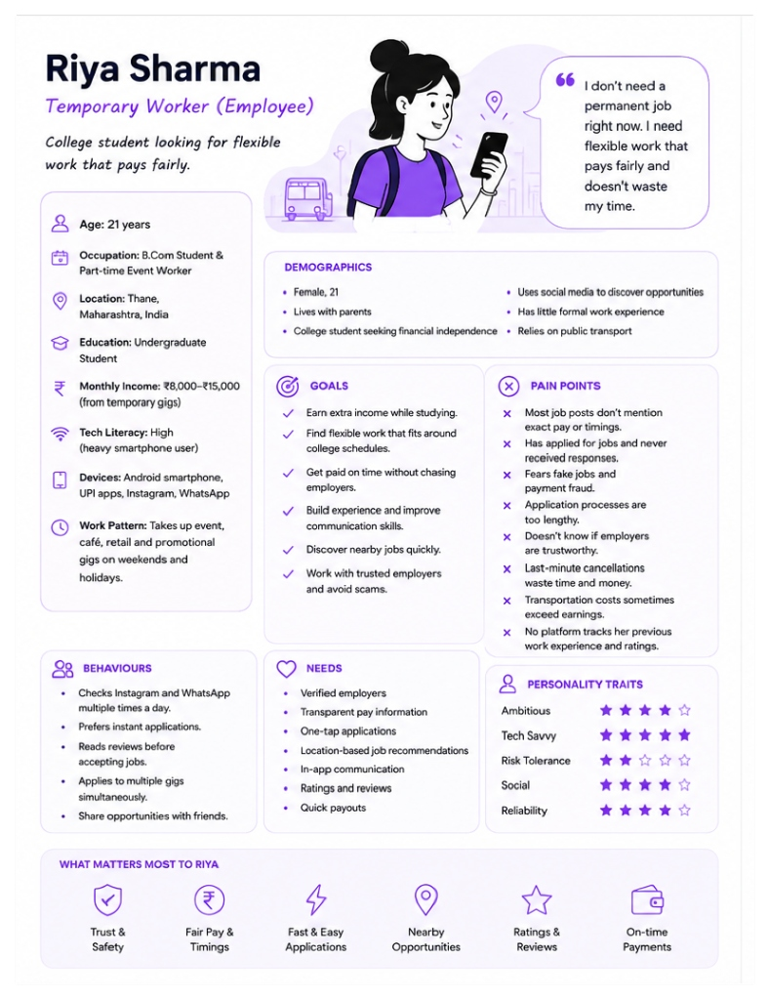
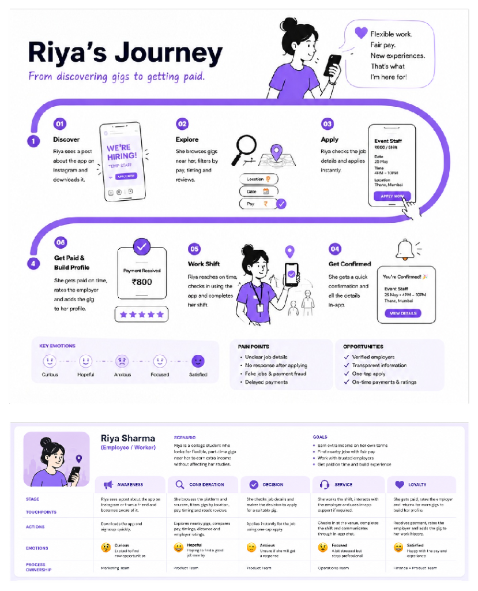

"Flexibility shouldn't mean chasing WhatsApp admins for last week's pay."
UpCrew.
Work that moves with you
An on-demand shift marketplace connecting verified temporary gig workers in retail, hospitality, and exhibitions with upfront guaranteed escrow pay, transparent commute radiuses, and zero-ghosting application SLAs. Designed from 100+ field interviews across Thane & Mumbai to replace predatory, chaotic WhatsApp hiring groups.


Next: The Breakdown · While the promise of gig work is freedom, 78% of temporary workers in Thane & Mumbai lose wages to unverified WhatsApp middlemen, opaque commissions, and zero-recourse ghosting.
Explore 02 · Problem StatementIndia’s temporary workforce is trapped in the chaos of informal hiring.
India’s temporary workforce ecosystem is highly fragmented and heavily dependent on informal hiring methods like WhatsApp groups, local referrals, and commission brokers. Businesses struggle to find reliable temporary staff on short notice for events, retail surges, exhibitions, and cafes, while students and gig workers face extreme difficulty discovering verified flexible opportunities with transparent compensation, reliable schedules, and trustworthy employers. This produces pervasive inefficiency, last-minute cancellations, unverified pay withholding, and deep distrust across the entire labor exchange.
Pay Opacity & Wage Cuts
Pay rates are discussed verbally. Workers face arbitrary post-shift deductions, delayed cash payments, and zero escrow deposit security.
Application Limbo & Ghosting
Workers apply to multiple WhatsApp links with zero confirmation or feedback. Employers simultaneously suffer a 100% no-show and sudden cancellation crisis.
Location Blindness & Commute
Listings vaguely state "near station," only for workers to discover upon arrival that the venue requires an expensive 45-minute auto ride, wiping out earnings.
Fake Shifts & Stranded Workers
No verified business credentials. Workers arrive at locked venues, contact organizers who block their numbers, and have zero recourse for wasted travel.
Trust Through Transparency: The UpCrew Shift Companion.
UpCrew transforms temporary shift employment into a predictable, high-trust digital marketplace. By replacing precarious chat threads with contract-level clarity, upfront escrow protection, geo-fenced attendance checks, and active lifecycle feedback, UpCrew creates a safe, dignified earning engine tailored to the Indian urban landscape.
Facts Before Commitment
Every shift card displays guaranteed payout (₹5,000), exact schedule (10:00–21:00), break policies, and real-time transit distance before the worker commits.
Guaranteed Escrow Payouts
Employers deposit shift funds into platform escrow at the time of booking. Post supervisor check-out, earnings release instantly into the worker's UPI wallet.
Verified Business Network
Mandatory business verification, store GST validation, past employer ratings, and direct on-site supervisor contacts eliminate fake and predatory listings.
7-Stage Active Pipeline
Eliminates ghosting completely. Transparent visual stages guide workers from application submission to waiting review, selection, arrival, and payment.
How Every Design Decision Directly Resolves a Field Friction
| User Pain Point | Field Friction Evidence | UpCrew Architectural Solution | Outcome Metric |
|---|---|---|---|
|
Wage Opacity Deductions & Delayed Pay |
89.7% of surveyed workers state unclear pay rates and payout delays are their primary barrier. |
Guaranteed Escrow Locked payout tag on shift card + instant 1-tap UPI withdrawal to bank account. |
100% Payout Certainty upon verified check-out |
|
Ghosting Limbo No Response Post-Application |
42.9% of workers report radio silence after applying; employers suffer a 100% no-show crisis. |
Live Pipeline 7-Stage status tracker with real-time push alerts, 24h reminders, and emergency backup slots. |
Zero Application Limbo with SLA response deadlines |
|
Location Risk Unpredictable Commutes |
55.2% of workers demand travel distance and location clarity before accepting. |
Transit Intelligence Radius filtering, live GPS travel times (e.g. "22 min away"), and integrated navigation. |
Eliminates Unpaid Commute surprises |
|
Scam Anxiety Unverified Employers |
Workers fear showing up to locked venues; 100% of employers want verified attendance records. |
Verified Protection Verified business green badge, in-app digital work agreement, and dual geo-fenced check-in. |
Mutual Accountability backed by digital work history |
Human-Centered Problem Solving: The 5-Stage Design Thinking Framework
To de-risk the product and ensure field durability, we anchored the project in a disciplined 5-stage Design Thinking methodology—moving iteratively from real street-level discovery in Mumbai’s informal markets to an ergonomically hardened mobile UI.
Empathize
- Field interviews with gig workers
- Google Form quantitative surveys
- WhatsApp informal hiring teardowns
- Empathy mapping & pain point capture
Define
- User persona: Riya Sharma
- Affinity mapping across 6 themes
- How Might We (HMW) statements
- End-to-end emotional journey curve
Ideate
- Card sorting with active workers
- 5-destination Information Architecture
- Complete Employee Sitemap (14+ nodes)
- Task-level shift application user flows
Prototype
- Low-fi & mid-fi wireframe progression
- UpCrew Mobile System v1.0 (Tokens)
- 19 production-grade screen layouts
- Interactive Figma motion prototype
Test
- 5 core field usability evaluations
- Cognitive load & onboarding reduction
- 10 edge-case resilient recovery states
- Final high-contrast visual hardening
12-Week Strategic Timeline: From Informal Chaos to Codified System
Research & Field Discovery
Analyzed gig worker psychology, completed 36 interview transcripts, surveyed target college demographics, and mapped the failures of informal WhatsApp hiring channels.
Synthesis & Problem Definition
Clustered 41 raw stickies into 6 affinity themes, constructed Riya Sharma's primary user persona, formulated HMW statements, and charted emotional trajectory dips.
Information Architecture & Low-Fi
Card sorting, structural navigation ribbon, complete 14-page employee sitemap, core task-flow branching, and rapid paper/low-fidelity wireframing.
Design System & High-Fi UI
Codified the UpCrew v1.0 Mobile System (Plus Jakarta Sans type scale, 4 tonal color ramps, 16.1:1 AAA contrast), building out 19 native mobile interface screens.
Interactive Motion Prototyping
Connected Figma interactive component states, simulated real-time 7-stage application tracking transitions, and mapped out 10 resilient edge-case scenarios.
Usability Iteration & Handoff
Resolved 5 core usability bottlenecks (progressive onboarding, persistent chips, upfront escrow badges), finalized the UI presentation, and compiled the complete case study.
Grounding Design in Hard Data: Survey Metrics & Live Interviews
Key Decision Driver: "Commutation. If the venue is too far or travel cost eats up the wage, I drop it immediately."
What Establishes Trust: "Company background, clear commutation, and clean payment written down like an agreement so both of us are protected."
Temporary workers aren't looking for vague career promises—they need micro-contracts with instant location math and locked payout certainty.
Informal WhatsApp Groups vs 9-to-5 Job Portals vs UpCrew
Rather than competing with monthly white-collar job boards, UpCrew attacks the acute structural gap between fragmented WhatsApp broadcast channels and heavyweight corporate HR tools.
| Feature Dimension | Informal Channels (WhatsApp / Agents) | Traditional Job Portals (Naukri / LinkedIn) | UpCrew Verified Model |
|---|---|---|---|
| Hiring Speed | Fast (Minutes, but chaotic) | Slow (2–4 weeks resume review) | Instant (1-tap shift application) |
| Shift Unit Economics | Single day, but unverified cash | Monthly salaried commitments only | 4h–8h Single Shifts with fixed payouts |
| Payment Protection | Zero (High wage withholding risk) | Direct corporate payroll | 100% Escrow locked upon booking |
| Commute & Location | Vague text ("near station") | City-level filter only | Live GPS Radius & transit calculation |
| Feedback & Status | 42.9% Ghosting (Radio silence) | Generic automated rejection emails | 7-Stage Pipeline with SLA countdown |
| Worker Protection | None (Locked gates upon arrival) | Company profile reviews | Verified GST & on-site supervisor check-in |
UpCrew Mind Map: Balancing Dual-Sided Operational Realities
Dignified Predictability
Guaranteed pay amounts · In-hand payout date · Commute radius under 30 mins · Zero document friction · Transparent shift schedules.
Zero-Loss Staffing
100% attendance reliability · Automated replacement backup · Verified ID & skill badge · Instant on-site QR check-in · Direct ratings.
Escrow & Mediation
Advance wage escrow locking · Geo-fenced time tracking · In-app dispute resolution · Emergency supervisor call link · Digital work contract.
Field Durability
Offline-cached confirmed shift pass · High-glare sunlight typography · 24h & 3h commute reminders · Emergency transit notifications.
Affinity Mapping: Clustering 41 Raw Stickies Across 6 Core Themes
Meet Riya Sharma: The College Student & Weekend Gig Hustler
Riya Sharma, 21
B.Com Undergraduate · Thane, Maharashtra
"I don't need a permanent job right now. I need flexible work that pays fairly and doesn't waste my time."
₹8,000 – ₹15,000
High (Android + UPI heavy)
Key Goals
- Earn supplemental cash without compromising college lectures.
- Discover shifts within a 30-minute public transit radius.
- Receive direct digital payments without chasing employers post-shift.
Critical Pain Points
- Vague job posts hiding pay rates and shift hours until after arrival.
- Applying to WhatsApp broadcasts and getting ghosted 42.9% of the time.
- Transportation costs eating into daily earnings on unverified shifts.
Riya's Empathy Map: Decoding Says, Thinks, Does & Feels
- "Will the employer be clear about shift timings?"
- "I need to know how much and when will I get paid."
- "I'm looking for something flexible that pays well."
- "I don't want hidden deductions taken from my salary."
- "I wish someone would notify me when shifts open nearby."
- "Am I missing better earning opportunities elsewhere?"
- "Why is finding a legitimate temporary gig so difficult?"
- "What if I show up and the employer refuses to pay?"
- "This listing might be fake or in an unsafe neighborhood."
- "Will completing this job improve my future work prospects?"
- Searches informal WhatsApp groups, Telegram, and Instagram daily.
- Asks college friends for referrals before trusting an unfamiliar listing.
- Conducts manual Google research on employers if details look sketchy.
- Applies to multiple shifts simultaneously to guard against ghosting.
- Excited about earning financial independence and building experience.
- Anxious about whether an accepted gig will actually materialize.
- Fearful of arriving at locked venues or facing wage theft.
- Frustrated by the lack of responses after submitting applications.
One journey. Distinct jobs to do.
A structural reading of the supplied screens: discovery leads to commitment; tracking, money and identity remain easy to return to.
Linear Onboarding & Verification Funnel
The mandatory authentication sequence every new worker completes once to verify identity, establish trust, and unlock active shift discovery.
5 Persistent Bottom Navigation Destinations
Once authenticated, the persistent bottom navigation bar anchors the worker's daily routine across five dedicated surfaces, handling everything from discovery and filtered search to shift management and instant earnings withdrawal.
Discover
Home feed & curated recommendations
High-pay urgent shift banners
Instant role previews
Search Panel
Dedicated keyword & role search
Pay, timing & radius filters
Map-based shift lookup
My Shifts
Applied · Upcoming · Completed
Real-time application progress
Arrival checklist & check-in
Wallet
Real-time available balance
Shift-by-shift ledger & history
1-tap UPI bank transfer
Profile
Worker identity & Aadhaar badge
Skill documents & preferences
Help centre & account settings
Browse
DiscoveryInspect
Shift detailsApply
1-tap commitIn Review
Waiting stateSelected
ConfirmedPrepare
Arrival guideEarnings
Wallet payoutVerification has a recovery branch. Submission has a waiting state. Selection leads to arrival guidance. Completion and payment approval are referenced in the interface; their operational screens are outside the supplied set.
The Core Shift Commitment & Completion Flow
Mapping the branching decision tree for workers from initial discovery through on-site check-in, supervisor sign-off, and instant escrow settlement.
Browse & Filter
Worker launches feed → Applies 30-min radius & ₹800+ wage filter → Browses cards.
Inspect Facts
Checks ₹5,000 guaranteed payout, timing (10:00–21:00), dress code & GPS route.
1-Tap Apply
Worker taps 'Apply Now' → Shift moves to 'Under Review' → Instant notification sent.
Check-in & Payout
On-site QR scan → Shift completed → Escrow released directly into worker's UPI wallet.
Riya’s Journey: From Discovering Gigs to Getting Paid

A Saturday in Riya's Life: The 6-Panel Experience Storyboard
Discovery & Urgency
Riya is studying at home in Thane. She needs ₹1,500 for books before Monday. She opens UpCrew to check for nearby weekend retail shifts.
Commute & Pay Clarity
She sets her radius to "Within 30 mins". A Retail Assistant shift at H&M LakeShore Mall appears: ₹5,000 guaranteed payout, 22 minutes away.
Zero Heavy Forms
Her Aadhaar verification and college documents are already pre-saved. With one tap, her application is submitted to H&M management.
Confirmed Notification
UpCrew pings her phone: "You're Confirmed!" She receives the supervisor's name, reporting entrance, and automated transit directions.
On-Site Live Check-in
Riya arrives at LakeShore Mall. The app detects her geo-location and she verifies her presence with the floor supervisor via QR check-in.
Instant UPI Payout
Shift finishes. The supervisor taps check-out. Escrow funds unlock immediately, transferring ₹5,000 directly into Riya's UPI account.
The Urban Hustle: High-Contrast Utility Meets Human Warmth
Mumbai Local Transit
Direct inspiration from suburban railway signage and metro wayfinding: high-legibility bold type that cuts through crowds and glare.
UPI Financial Trust
Clean green verification seals and receipt ledgers that mimic trusted Indian fintech standards (GPay, PhonePe) to signal instant settlement safety.
Youthful Optimism
Warm purple and violet narrative accents paired with relatable character line-art to make temporary work feel empowering, not exploitative.
Field Ergonomics
Deep charcoal typography on pure white cards, oversized 44px tap targets, and high tactile contrast for one-handed outdoor usage.
UpCrew Employee Sitemap: 14 Dedicated App Surfaces
1. Discovery & Search
- Home Feed (Nearby Shifts)
- Explore Jobs (Keyword Search)
- Categories (Retail, Events, Cafe, Warehouse, Delivery, Promos)
- Filters (Distance, Pay, Timing, Gender, Instant Join)
- Saved Shifts & Search History
2. Shift & Application
- Job Details Overview
- Guaranteed Pay & Escrow Tag
- Shift Schedule & Break Times
- Application Tracker (Applied, Review, Selected, Rejected)
- One-Tap Direct Commit
3. Active Shift & Safety
- Live Location Map & Navigation
- Employer / Supervisor Contact
- Geo-Fenced QR Check-In
- Check-Out & Hours Approval
- Emergency Contact & Report Issue
4. Wallet & Compliance
- Real-time Available Balance
- Instant UPI Bank Withdrawal
- Pending Escrow Payments
- Aadhaar Verification & Documents
- Safety Centre & User Agreement
Early Paper & Low-Fi Wireframing: Testing Cognitive Load
Onboarding Fatigue
Initial paper prototypes tested an 8-step verification upfront. Users abandoned before seeing a single job. Solution: deferred verification until post-application.
Card Hierarchy Confusion
Early wireframes buried shift pay inside body copy. Workers scanned for wages first. Solution: elevated ₹ payout and distance into bold top-right badges.
Status Reassurance
Once users applied, a plain toast message caused anxiety ("Did they get it?"). Solution: built a permanent 7-stage visual tracker in 'My Shifts'.
Filter Ergonomics
Hidden modal filters slowed browsing. Solution: introduced sticky horizontal filter pills (Distance, Pay, Time) directly above the live feed.
Mid-Fidelity Wireframes: Locking Layout & Information Density
Prior to visual polish, 10 core mobile layouts were engineered in greyscale to validate thumb zones, 44px tap ergonomics, typography hierarchy, and zero layout shift.
Welcome
Value prop & instant sign-in trigger
Permissions
Contextual location & alerts gate
Phone Auth
Phone number + OTP verification
Live Feed
Shift cards, search bar & filter chips
Shift Details
Guaranteed pay, hours & map radius
1-Tap Apply
Instant application confirmation
Status Tracker
7-Stage visual progress pipeline
My Shifts
Applied, Upcoming & Completed tabs
Active Check-in
QR check-in & supervisor link
Wallet Payout
Real-time ledger & 1-tap UPI transfer
Codified for the field: UpCrew Mobile System v1.0
UpCrew’s interface is codified into a living mobile design system engineered for high-velocity shift discovery and field durability. Across typography, spatial geometry, tonal color ramps, and interactive state matrices, every element is extracted and built directly into native web components—ensuring 44px ergonomics in direct outdoor sunlight.
Four-Tier Token Taxonomy & Implementation Contracts
Tokens flow through an unbending four-tier inheritance pipeline, enforcing consistency between design tokens and mobile codebase implementations.
color.blue.600
#2558E8 (Base Hex)
action.primary.default
Functional Alias
button.primary.container
Specific Element Role
job-card.featured
Assembled Domain Pattern
No Hex in Components
Components never consume raw hex codes directly. Every visual property resolves through semantic token aliases, eliminating hardcoded styling drift.
State is Explicit
Every interactive element features dedicated tokens for default, hover/pressed, focus, and disabled states.
Soft + Strong Pairing
Status badges pair low-opacity background fills (e.g. green 100) with high-contrast text and indicator pips (green 700) for instant glanceability.
Color is Redundant
Color never carries meaning alone. Every critical status pairs tint with explicit typographic labels, icons, or tactile shapes to guarantee accessibility.
Tonal Color Ramps & WCAG Contrast Verification
Curated tonal ramps provide mathematical gradation from 50 to 900 steps, anchored by high-visibility primaries calibrated for outdoor sunlight.
Primary Action Blue
Primary CTAs, active selections, escrow security & interactive states#EFF6FF#DBEAFE#BFDBFE#93C5FD#60A5FA#3B82F6#2558E8#1D4ED8#1E40AF#1E3A8AAccent & Urgency Orange
Surge pay premiums, reservation countdowns, human energy & warnings#FFF7ED#FFEDD5#FED7AA#FDBA74#FB923C#F26419#EA580C#C2410C#9A3412#7C2D12Verified & Settlement Green
Confirmed shifts, completed payouts, business verification & success#ECFDF5#D1FAE5#A7F3D0#6EE7B7#34D399#10B981#16A34A#059669#047857#064E3B5 Verified Contrast Pairs (Field Tested)
blue 600 (#2558E8)
Background: white (#FFFFFF)
charcoal (#141210)
Background: white (#FFFFFF)
white (#FFFFFF)
Background: blue 600 (#2558E8)
green 700 (#047857)
Background: green 50 (#ECFDF5)
orange 700 (#C2410C)
Background: orange 50 (#FFF7ED)
Plus Jakarta Sans Foundry & 11-Step Type Scale
Geometric grotesque crafted with open counters and balanced proportions. Generous aperture clarity and high x-height ensure crisp scanning on budget mobile screens in high glare.
Plus Jakarta Sans
Geometric Grotesque engineered for clarity, numerical legibility, and high-density mobile interfaces.
| Token Role | Size / Line Height | Weight | Usage & Surface Intent |
|---|---|---|---|
| Display | 27 / 34 px |
Bold 700 | Launch statement & key confirmation screens |
| Title | 23 / 30 px |
Bold 700 | Primary screen titles (e.g. "All Jobs", "My Shifts") |
| Heading | 20 / 26 px |
Bold 700 | Primary card or job detail headline |
| Subheading | 17 / 23 px |
SemiBold 600 | Section lead paragraphs & employer names |
| Body | 14 / 21 px |
Regular 400 | Primary narrative reading copy & instructions |
| Body Small | 13 / 19 px |
Regular 400 | Compact support copy, address & requirements |
| Label | 12 / 16 px |
SemiBold 600 | Form field headers, metadata tags & tabs |
| Button | 12 / 16 px |
Bold 700 | Primary, secondary & filter button action labels |
| Caption | 11 / 15 px |
Medium 500 | Supporting timestamps, distance & fine print |
| Micro | 10 / 14 px |
Medium 500 | Dense status badges & compact numerical counters |
| Nano | 9 / 12 px |
SemiBold 600 | Exceptional legal footnotes & badge tags |
2px Micro-Grid, 8pt Spacing Scale & 402px Geometry
Spatial harmony constructed on an 8pt layout rhythm paired with a 2px micro-adjustment grid, ensuring optical balance and predictable vertical cadence.
The 8pt Spacing Ladder
Governs all margins, paddings, and component gap intervals.
402px Mobile Frame & Component Bounds
Governing dimensions calibrated for standard Android & iOS devices.
R_outer = R_inner + Padding
Interactive Component Library & Live Loading Lab
Zero Cumulative Layout Shift (CLS: 0.000) verified architecture calibrated to Apple HIG and Google M3 standards: 4 button variants across 6 standardized states, single-tap filter chips with contextual icon reveals, 44px minimum touch targets, and Emil Kowalski state-morphing physics.
Live Loading States & Layout Shift Prevention
Skeletons must exactly mirror the typography, bounding boxes, and metadata geometry of the hydrated card. Compare the pre-fetch skeleton shimmer directly against the hydrated production card below, or test live state morphing.
Retail Assistant
Filter Chips & Segmented Control
Contextual Icon TransitionSoft + Strong Status Pills
Pulsing Radar TelemetrySearch & Field Inputs
44px HIG Touch BoundsShow the promise. Then show the product.
The introduction moves from a broad value proposition to tangible examples of discovery, application tracking and earnings.


A concise starting point
Nearby opportunities, clear pay and everything in one place establish the three reasons to continue. Skip stays visible.
Make the promise concrete
A Retail Assistant example exposes ₹5000, 11th August and 10:00–21:00. The preview introduces the same facts used later to decide.
Preview life after applying
The timeline and ₹12,850 earnings example communicate continuity: updates and payments belong to the same experience.
Ask when needed. Explain why it matters.
Location and notification permissions are deferred until the user understands their utility. Clear rationale and zero penalties for skipping keep agency in the worker's hands.
Value before access
Contextual prompts explain that notification permissions unlock instant shift alerts and location accuracy reduces travel uncertainty before triggering system-level dialogs.
Granular, independent choice
Notifications and location services operate independently. Workers can enable push notifications for shift releases while keeping geolocation manual.
Zero-friction deferral
"Not now" and "Skip" remain prominent and accessible with zero penalty. Workers can freely browse all shifts across Mumbai and Thane without granting immediate access.

A familiar path into the account.
Phone entry, a one-time code and explicit confirmation keep the authentication model visible at each step.


One primary input
The +91 country code and 98765 43210 entry are grouped under Mobile number. The one-time-code explanation sets expectations before Continue.
Delivery is a visible state
The masked destination +91 ••••• 43210, code fields and 00:24 resend countdown explain where the code went and when another can be requested.
Confirm, then move forward
Phone verified and the masked account confirmation resolve uncertainty. View available jobs becomes the next primary action.
Browse by reality, not job titles.
Hourly workers decide on shifts based on three non-negotiables: guaranteed cash payout, exact timing, and transit distance. The live feed prioritizes decision-ready facts over generic job postings.
Single-tap horizontal filter chips
Thumb-friendly filter rail ("All jobs 24", "Retail 8", "Nearby", "High paying") allows instantaneous category filtering without modal disruptions or scrolling friction.
Decision-first shift cards
Total payout (₹5,000), verified employer badge (H&M, LakeShore Mall), transit distance (22 min away), and shift window (10:00–21:00) remain visible upfront on every card.
Instant application triggers
One-tap "View shift" and direct action paths preserve scanning momentum for high-demand retail and hospitality shifts that fill within minutes of release.
Zero ambiguity before the worker commits.
Before an applicant taps 'Apply Now', every operational parameter is pinned: dress code requirements, meal breaks, exact venue entrance, and 24-hour payment guarantees.
Pinned compensation & platform escrow
Payout of ₹5,000 prominently displayed alongside payment terms ("Payment within 24 hours of approval") backed by UpCrew platform escrow to eliminate bad-faith wage withholding.
Venue & arrival clarity
Specific store branch ("H&M, LakeShore Mall"), calculated travel duration ("22 min from you"), and 1-tap Google Maps directions integration resolve physical commute doubt.
Unambiguous role expectations
Explicit bulleted requirements ("Wear black trousers and closed-toe shoes", "30 min meal break included") remove on-site surprises and supervisor friction.
Transparent waiting states, zero ghosting.
The greatest source of gig worker anxiety is the void between applying and hearing back. UpCrew replaces radio silence with real-time application tracking and guaranteed decision windows.


1-tap application
Pre-verified profile credentials eliminate repetitive form fills. A single confirmation review ensures deliberate worker intent without friction.
Live progress tracker
Stepper visualization ("Applied 9:12 AM" → "In Review: Usually 2–4 hrs" → "Decision pending") keeps workers informed without chasing updates.
Immediate arrival guidance
When selected, the screen shifts immediately to arrival instructions: supervisor contact, check-in kiosk location, and calendar sync.
The worker's operational cockpit.
A dedicated hub for active, upcoming, and completed obligations. Segmented views ensure workers never miss a shift or lose track of pending earnings.
Tri-state segmented management
Distinct tabs for 'Applied', 'Upcoming', and 'Completed' segregate active obligations from historical earnings records, preventing cognitive overload.
Urgent contextual callouts
Imminent shifts surface transit countdowns ("Shift starts in 2h 15m · 35 min commute"), venue directions, and one-tap emergency cancellation protocols.
Verified attendance records
Completed shift cards log supervisor sign-off timestamps and verified clock-in GPS coordinates, creating an unshakeable worker reputation record.

Earned today, visible immediately, withdrawn instantly.
Financial transparency bridges worker dignity and platform retention. Total earnings, available balances, and verified KYC profiles provide proof that labor is honored.

Granular balance segregation
Distinguishes between 'Total Earned' (₹12,850), 'Ready to Withdraw' (₹5,000), and 'In Processing' escrow funds awaiting shift supervisor sign-off.
Instant UPI direct settlement
One-tap payout to registered UPI VPA (e.g. Google Pay / PhonePe) with zero hidden platform deductions or arbitrary withdrawal thresholds.
Verified profile & rating equity
Worker profiles document verified government ID badges, 4.8★ rating across 67 completed shifts, and punctuality scores that unlock higher-paying shifts.
Field resilience: zero dead ends in the real world.
In day-to-day gig work, users encounter unstable cellular networks, empty search radius states, document rejections, and employer schedule changes. Every edge state provides an immediate, actionable escape route.
Zero Shifts in Selected Radius
Never a dead end. Explains why 0 results matched, allows 1-tap expansion from 5 km to 15 km, and offers push notifications for nearby openings.

Document Rejection & Recovery
Avoids vague rejection banners. Highlights the exact document issue (such as glare or unreadable text) with clear instructions for re-capture.

Offline Confirmed Shift Pass
Caches confirmed shift location, supervisor contact details, and venue directions locally so workers retain access even if mobile reception drops in transit.

Employer Emergency Cancellation
Provides immediate notice with guaranteed cancellation compensation details (₹500 payout) and proactive recommendations for alternative shifts in the same time window.

Verified On-Site Live Check-In
Protects attendance and reliability records through on-site supervisor confirmation and verified location coordinates.

3-Hour Transit & Shift Reminder
Proactive countdown notifications with estimated transit times and supervisor details to prevent accidental delays or no-shows.

Explore All 19+ High-Fidelity App Screens in Figma
In addition to the 10 core screens showcased above, view the complete master flows, modal states, micro-interactions, empty states, and interactive components in the production Figma canvas.
Usability Considerations: 5 Critical Field Issues & Design Fixes
Rather than relying on aesthetic assumptions, every core flow underwent rigorous usability scrutiny. Here are 5 concrete user friction points uncovered during testing and the architectural iterations engineered to resolve them.
Heavy Upfront Identity Gating
Testing Discovery: Requiring Aadhaar upload and full document verification before users could view available shifts caused severe first-session abandonment.
Design Iteration: Shifted to progressive disclosure. Users can freely browse, filter, and view shift details; document verification is deferred until the final "Commit to Shift" step.
Anxiety Over Fake Listings & Scams
Testing Discovery: Workers were hesitant to tap 'Apply' because existing platforms often feature fraudulent job posts leading to locked gates or unverified employers.
Design Iteration: Introduced prominent green "Verified Business" badges, physical store venue addresses, and direct supervisor contact cards before application.
Buried Pay Rates & Commute Distance
Testing Discovery: Early cards placed job descriptions at the top and pay rates in fine print, forcing users to open every card just to check wages and transit distance.
Design Iteration: Redesigned the card anatomy to highlight ₹5,000 guaranteed payout in the top right, paired with real-time GPS transit calculation ("22 min away").
Post-Application Limbo & Uncertainty
Testing Discovery: In 42.9% of typical gig cases, applicants face total radio silence. Users didn't know if their submission was received, under review, or rejected.
Design Iteration: Engineered a 7-stage live status tracker in 'My Shifts' with explicit SLA review timers, proactive push updates, and immediate alternative recommendations if not selected.
Experience UpCrew Live: The Full Interactive Prototype
Test the Shift Discovery, Application & Escrow Journey
Navigate from the live video splash launch through the live feed, inspect Retail Assistant shift details at H&M LakeShore Mall, execute a 1-tap application, and simulate on-site supervisor check-in.
Thank you for reviewing UpCrew!
UpCrew demonstrated that solving temporary workforce fragility in India isn't just a UI challenge—it requires designing deep systemic trust, financial escrow safety, and clear communication into every single tap.
100% Payout Certainty
Guaranteed escrow deposits eliminate unpaid wage disputes entirely post-shift.
Zero Ghosting Limbo
7-stage transparent pipeline with SLA response timers gives workers total clarity.
Field-Ready Durability
16.1:1 AAA sunlight contrast and 44px ergonomics designed for active transit use.